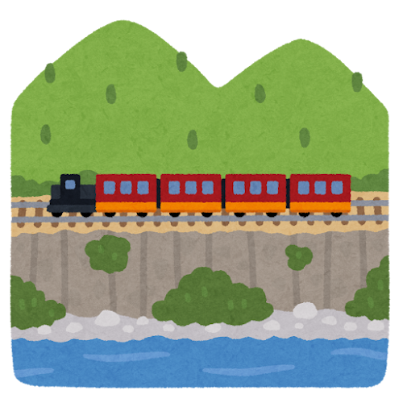

蹴上インクライン

蹴上インクラインは、京都市左京区にある歴史的な鉄道の跡地です。
かつて、琵琶湖疏水の一区間をなしており、蹴上発電所の電力で多くの船を運びました。
現在は散策路として整備されており、多くの観光客が訪れます。
基本情報
住所: 〒606-8437 京都府京都市左京区南禅寺草川町17
アクセス: 京都市営地下鉄東西線 蹴上駅下車徒歩7分
開館時間: 午前９時～午後５時
料金: 無料
公式サイト: 琵琶湖疏水記念館
蹴上インクラインは、京都市左京区にある歴史的な鉄道の跡地です。
かつて、琵琶湖疏水の一区間をなしており、蹴上発電所の電力で多くの船を運びました。
現在は散策路として整備されており、多くの観光客が訪れます。
住所: 〒606-8437 京都府京都市左京区南禅寺草川町17
アクセス: 京都市営地下鉄東西線 蹴上駅下車徒歩7分
開館時間: 午前９時～午後５時
料金: 無料
公式サイト: 琵琶湖疏水記念館